Choice Models and Subjective Utility
Dublin Data Science
Data Science @ Personio
9/16/23
Agenda
- A Little History
- A Naive Utilty Model
- An Augmented Model
- Adding Correlation Structure
- Counterfactual Reasoning
- Individual Heterogenous Utility
McFadden and BART
“Transport projects involve sinking money in expensive capital investments, which have a long life and wide repercussions. There is no escape from the attempt both to estimate the demand for their services over twenty or thirty years and to assess their repercussions on the economy as a whole.” - Denys Munby, Transport, 1968 ”
Bay Area Rapid Transit
Revealed Preference and Predicting Demand
Self Centred Utility Maximisers
- The assumption of revealed preference theory is that if a person chooses A over B then their subjective utility for A is greater than for B.
- Survey data estimated about 15% of users would adopt the newly introduced BART system. McFadden’s random utility model estimated 6%.
- He was right.
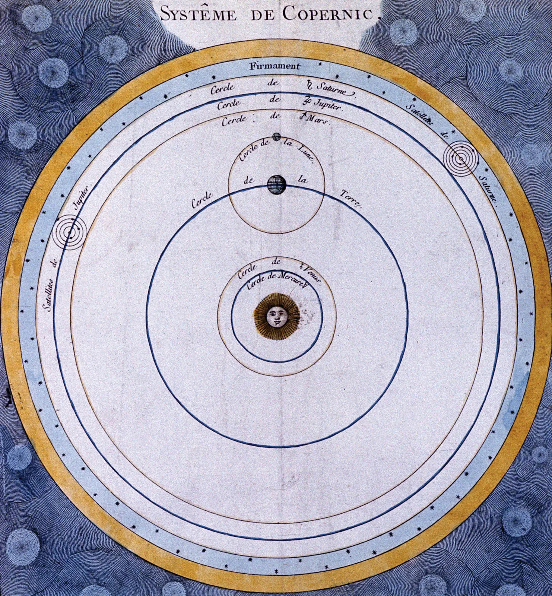
- Copernican Shift: He estimated utility to predict choice, rather than infer utility from choice.
General Applicability of Choice Problems
- These models offer the possibility of predicting choice in diverse domains: policy, brand, school, car and partners.
- Question: What are the attributes that drive these choices? How well are they measurable?
- Question: How do changes in these attributes influence the predicted market demand for these choices?
Note on Model Evaluation
Replicating the Super Soldier Program
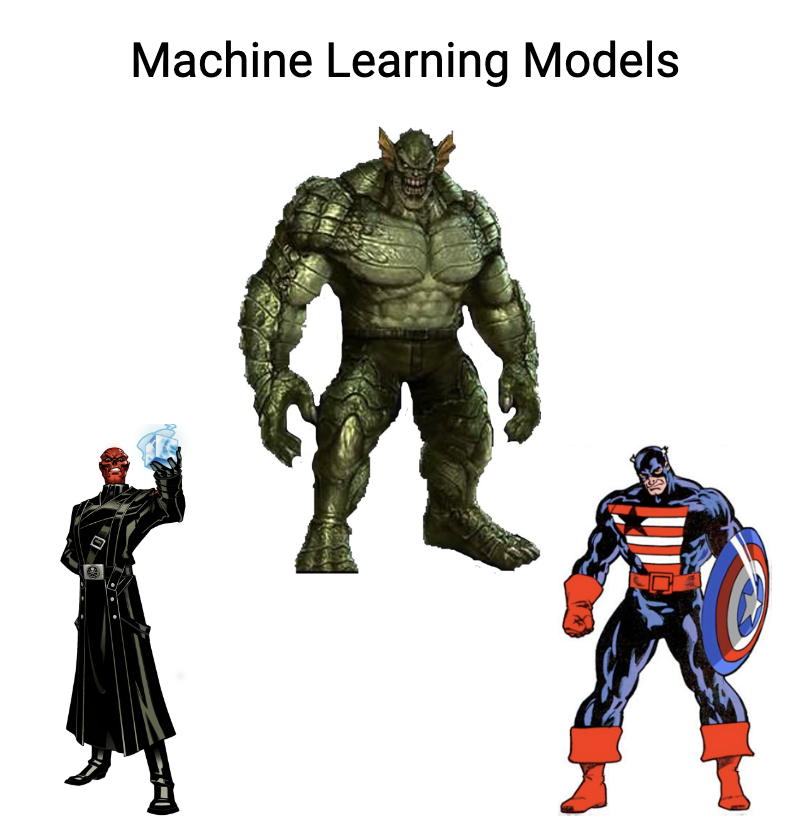
Note on Model Evaluation
Replicating the Super Soldier Program
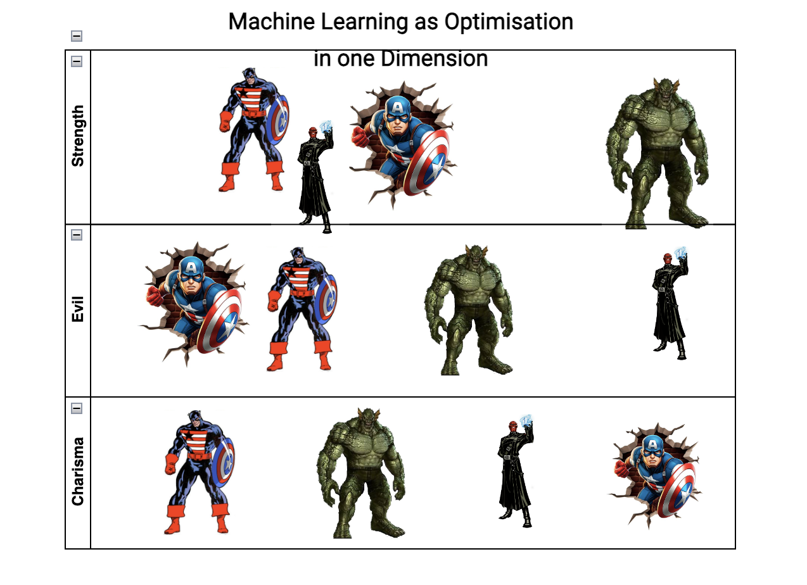
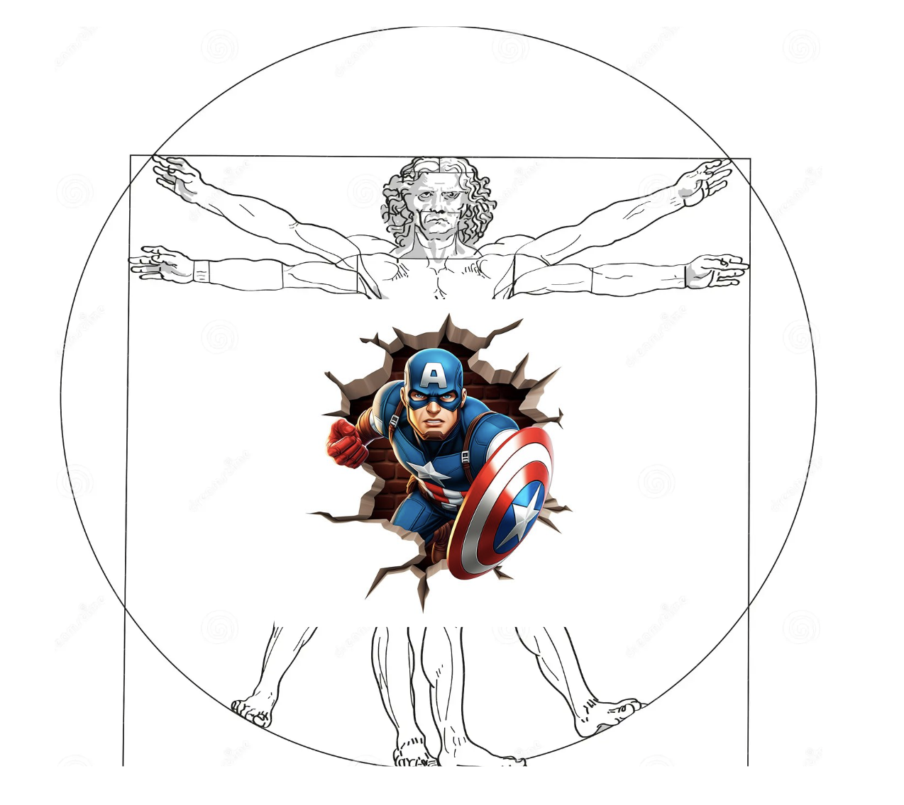
Choice: The Data
Gas Central Heating and Electrical Central Heating described by their cost of installation and operation.
| choice_id | chosen | ic_gc | oc_gc | … | oc_ec |
|---|---|---|---|---|---|
| 1 | gc | 866 | 200 | … | 542 |
| 2 | ec | 802 | 195 | … | 510 |
| 3 | er | 759 | 203 | … | 495 |
| 4 | gr | 789 | 220 | … | 502 |
Choice: A Naive Model
Underspecified Utilities
Let there be five goods described by their cost of installation and operation.
\[ \begin{split} \overbrace{\begin{pmatrix} \color{green}{u_{gc}} \\ \color{green}{u_{gr}} \\ \color{green}{u_{ec}} \\ \color{green}{u_{er}} \\ \color{green}{u_{hp}} \\ \end{pmatrix}}^{utility} = \begin{pmatrix} gc_{ic} & gc_{oc} \\ gr_{ic} & gr_{oc} \\ ec_{ic} & ec_{oc} \\ er_{ic} & er_{oc} \\ hp_{ic} & hp_{oc} \\ \end{pmatrix} \overbrace{\begin{pmatrix} \color{blue}{\beta_{ic}} \\ \color{blue}{\beta_{oc}} \\ \end{pmatrix}}^{parameters} \end{split} \]
Choice: A Naive Model
The utility calculation is fundamentally comparative. \[ \begin{split} \begin{pmatrix} \color{green}{u_{gc}} \\ \color{green}{u_{gr}} \\ \color{green}{u_{ec}} \\ \color{green}{u_{er}} \\ \color{red}{\overbrace{0}^{\text{outside good}}} \\ \end{pmatrix} = \begin{pmatrix} gc_{ic} & gc_{oc} \\ gr_{ic} & gr_{oc} \\ ec_{ic} & ec_{oc} \\ er_{ic} & er_{oc} \\ \color{red}{0} & \color{red}{0} \\ \end{pmatrix} \begin{pmatrix} \color{blue}{\beta_{ic}} \\ \color{blue}{\beta_{oc}} \\ \end{pmatrix} \end{split} \]
We zero out one category in the data set to represent the “outside good” for comparison. Similar to dummy variables in Regression, this is required for the model to be identified.
Choice: A Naive Model
Utility determines choice probability of choice:
\[\text{softmax}(\color{green}{u})_{j} = \frac{\exp(\color{green}{u_{j}})}{\sum_{q=1}^{J}\exp(\color{green}{u_{q}})}\]
choices determine market share where:
\[ s_{j}(\mathbf{\color{blue}{\beta}}) = P(\color{green}{u_{j}} > \color{green}{u_{k}}; ∀k ̸= j) \]
Choice: Estimation
The model is traditionally estimated with maximum likelihood caclulations
\[ L(\color{blue}{\beta}) = \prod s_{j}(\mathbf{\color{blue}{\beta}}) \]
or taking the log:
\[ l(\color{blue}{\beta}) = \sum log(s_{j}(\mathbf{\color{blue}{\beta}})) \] \[ \text{ We find: } \underset{\color{blue}{\beta}}{\mathrm{argmax}} \text{ } l(\color{blue}{\beta}) \]
Choice: Bayesian Estimation
To evaluate the integrals in the Bayesian model we use MCMC
\[\underbrace{\color{blue}{\beta}}_{\text{prior draws}} \sim Normal(0, 1) \]
\[ \underbrace{p(\color{blue}{\beta} | D)}_{\text{posterior draws}} = \frac{p(\mathbb{\color{blue}{\beta}})p(D | \color{blue}{\beta} )}{\int_{i}^{n} p(D | \mathbf{\color{blue}{\beta_{i}}})p(\mathbf{\color{blue}{\beta_{i}}}) } \]
The Naive Model in Code
with pm.Model(coords=coords) as model_1:
## Priors for the Beta Coefficients
beta_ic = pm.Normal("beta_ic", 0, 1)
beta_oc = pm.Normal("beta_oc", 0, 1)
## Construct Utility matrix and Pivot
u0 = beta_ic * wide_heating_df["ic.ec"] + beta_oc * wide_heating_df["oc.ec"]
u1 = beta_ic * wide_heating_df["ic.er"] + beta_oc * wide_heating_df["oc.er"]
u2 = beta_ic * wide_heating_df["ic.gc"] + beta_oc * wide_heating_df["oc.gc"]
u3 = beta_ic * wide_heating_df["ic.gr"] + beta_oc * wide_heating_df["oc.gr"]
u4 = np.zeros(N) # Outside Good
s = pm.math.stack([u0, u1, u2, u3, u4]).T
## Apply Softmax Transform
p_ = pm.Deterministic("p", pm.math.softmax(s, axis=1), dims=("obs", "alts_probs"))
## Likelihood
choice_obs = pm.Categorical("y_cat", p=p_, observed=observed, dims="obs")Interpreting the Model Coefficients
Rate of Substitution
The beta coefficients in the mode are interpreted as drivers of utility. However, the precision in these latent terms is relative to the variance of unobserved factors.
The utility scale is not fixed, but the ratio \(\frac{\beta_{ic}}{\beta_{oc}}\) is invariant.
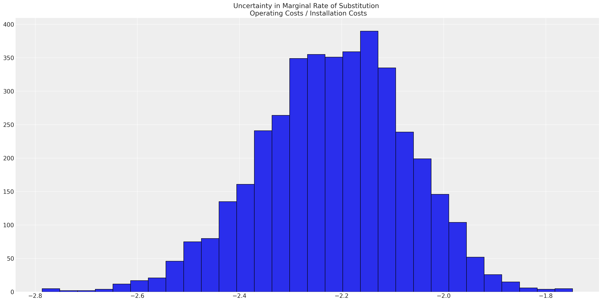
Model Posterior Predictive Fits
The model fit fails to recapture the observed data points
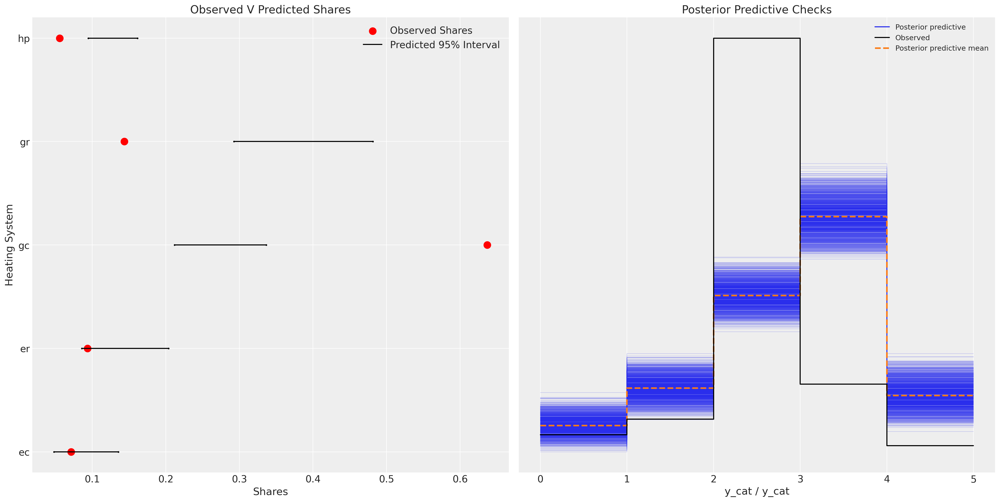Model Fit
Augmenting the Model:
Product Specific Intercepts
\[ \begin{split} \begin{pmatrix} \color{red}{u_{gc}} \\ \color{purple}{u_{gr}} \\ \color{orange}{u_{ec}} \\ \color{teal}{u_{er}} \\ 0 \end{pmatrix} = \begin{pmatrix} \color{red}{\alpha_{gc}} + \color{blue}{\beta_{ic}}gc_{ic} + \color{blue}{\beta_{oc}}gc_{oc} \\ \color{purple}{\alpha_{gr}} + \color{blue}{\beta_{ic}}gr_{ic} + \color{blue}{\beta_{oc}}gr_{oc} \\ \color{orange}{\alpha_{ec}} + \color{blue}{\beta_{ic}}ec_{ic} + \color{blue}{\beta_{oc}}ec_{oc} \\ \color{teal}{\alpha_{er}} + \color{blue}{\beta_{ic}}er_{ic} + \color{blue}{\beta_{oc}}er_{oc} \\ 0 + 0 + 0 \end{pmatrix} \end{split} \]
Augmenting the Model:
with pm.Model(coords=coords) as model_2:
## Priors for the Beta Coefficients
beta_ic = pm.Normal("beta_ic", 0, 1)
beta_oc = pm.Normal("beta_oc", 0, 1)
alphas = pm.Normal("alpha", 0, 1, dims="alts_intercepts")
## Construct Utility matrix and Pivot using an intercept per alternative
u0 = alphas[0] + beta_ic * wide_heating_df["ic.ec"] + beta_oc * wide_heating_df["oc.ec"]
u1 = alphas[1] + beta_ic * wide_heating_df["ic.er"] + beta_oc * wide_heating_df["oc.er"]
u2 = alphas[2] + beta_ic * wide_heating_df["ic.gc"] + beta_oc * wide_heating_df["oc.gc"]
u3 = alphas[3] + beta_ic * wide_heating_df["ic.gr"] + beta_oc * wide_heating_df["oc.gr"]
u4 = np.zeros(N) # Outside Good
s = pm.math.stack([u0, u1, u2, u3, u4]).T
## Apply Softmax Transform
p_ = pm.Deterministic("p", pm.math.softmax(s, axis=1), dims=("obs", "alts_probs"))
## Likelihood
choice_obs = pm.Categorical("y_cat", p=p_, observed=observed, dims="obs")Augmenting the Model:
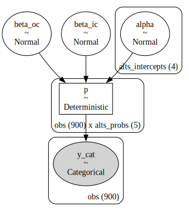Model Structure
Augmenting the Model
Posterior Predictions
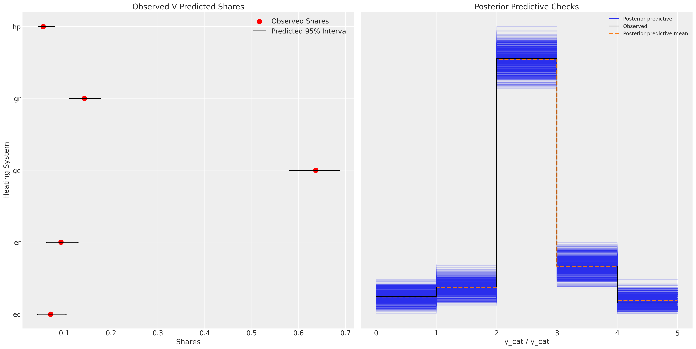Model Fit
Adding Correlation Structure
Dependence in Market Share
\[ \alpha_{i} \sim Normal(\mathbf{0}, \Sigma) \]
\[ \begin{split} \begin{pmatrix} \color{red}{u_{gc}} \\ \color{purple}{u_{gr}} \\ \color{orange}{u_{ec}} \\ \color{teal}{u_{er}} \\ 0 \end{pmatrix} = \begin{pmatrix} \color{red}{\alpha_{gc}} + \color{blue}{\beta_{ic}}gc_{ic} + \color{blue}{\beta_{oc}}gc_{oc} \\ \color{purple}{\alpha_{gr}} + \color{blue}{\beta_{ic}}gr_{ic} + \color{blue}{\beta_{oc}}gr_{oc} \\ \color{orange}{\alpha_{ec}} + \color{blue}{\beta_{ic}}ec_{ic} + \color{blue}{\beta_{oc}}ec_{oc} \\ \color{teal}{\alpha_{er}} + \color{blue}{\beta_{ic}}er_{ic} + \color{blue}{\beta_{oc}}er_{oc} \\ 0 + 0 + 0 \end{pmatrix} \end{split} \]
Adding Correlation Structure
with pm.Model(coords=coords) as model_3:
beta_ic = pm.Normal("beta_ic", 0, 1)
beta_oc = pm.Normal("beta_oc", 0, 1)
beta_income = pm.Normal("beta_income", 0, 1 dims="alts_intercepts")
chol, corr, stds = pm.LKJCholeskyCov(
"chol", n=4, eta=2.0,
sd_dist=pm.Exponential.dist(1.0, shape=4)
)
alphas = pm.MvNormal("alpha", mu=0, chol=chol, dims="alts_intercepts")
u0 = (
alphas[0]
+ beta_ic * wide_heating_df["ic.gc"]
+ beta_oc * wide_heating_df["oc.gc"]
+ beta_income[0] * wide_heating_df["income"]
)
u1 = (
alphas[1]
+ beta_ic * wide_heating_df["ic.gc"]
+ beta_oc * wide_heating_df["oc.gc"]
+ beta_income[1] * wide_heating_df["income"]
)
u2 = (
alphas[2]
+ beta_ic * wide_heating_df["ic.gc"]
+ beta_oc * wide_heating_df["oc.gc"]
+ beta_income[2] * wide_heating_df["income"]
)
u3 = (
alphas[3]
+ beta_ic * wide_heating_df["ic.gr"]
+ beta_oc * wide_heating_df["oc.gr"]
+ beta_income[3] * wide_heating_df["income"]
)
u4 = np.zeros(N) # pivot
s = pm.math.stack([u0, u1, u2, u3, u4]).T
p_ = pm.Deterministic("p", pm.math.softmax(s, axis=1), dims=("obs", "alts_probs"))
choice_obs = pm.Categorical("y_cat", p=p_, observed=observed, dims="obs")Adding Correlation Structure
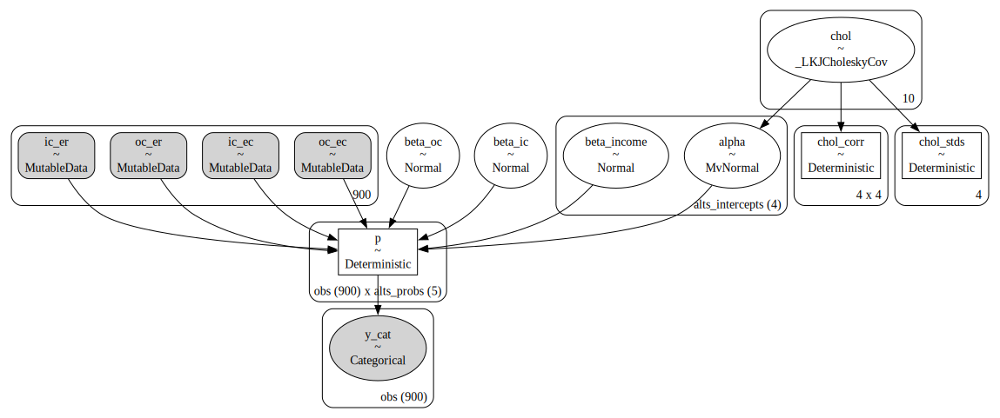Correlation Structure
Counterfactual Reasoning
From Probability to Causation
“[C]ontrary to the views of a number of pessimistic statisticians and philosophers you can get from probabilities to causes after all. Not always, not even ussually - but in just the right circumstances and with just the right kind of starting information, it is in principle possible.” - Nancy Cartwright in Nature’s Capacities and their Measurement
“One of the functions of theoretical economics is to provide fully articulated artificial economic systems that can serve as laboratories in which policies that would be prohibitively expensive to experiment with in actual economies can be tested out at a much lower cost” - Mary Morgan quoted in Hunting Causes and Using Them
Counterfactual Reasoning
Ceteris Paribus Laws
With a fitted PyMC model we can counterfactually reset the values for the input data and regenerate the posterior predictive distribution holding else equal in the data generating process.
- What would the market share be like if prices for electrical systems increased 20%?
# update values of predictors with new 20%
# price increase in operating costs for electrical options
with model_3:
pm.set_data({"oc_ec": wide_heating_df["oc.ec"] * 1.2,
"oc_er": wide_heating_df["oc.er"] * 1.2})
# use the updated values and predict outcomes and probabilities:
idata_new_policy = pm.sample_posterior_predictive(
idata_m3,
var_names=["p", "y_cat"],
return_inferencedata=True,
predictions=True,
extend_inferencedata=False,
random_seed=100,
)
idata_new_policyCounterfactual Reasoning
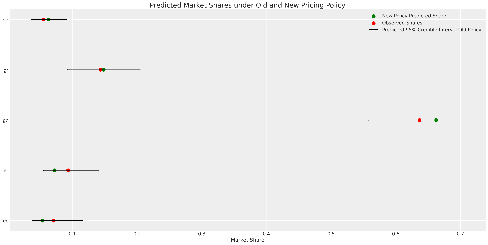Counterfactual Shares
Counterfactual Reasoning
Interventions and Conditionalisation
- There is a sharp distinction between conditional probability distributions and probability under intervention
- In PyMC you can implement the do-operator to intervene on the graph that represents your data generating process.
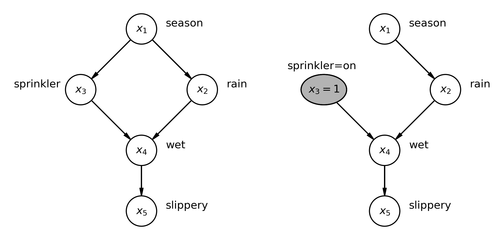
Individual Heterogenous Utility
Repeated Choice and Hierarchical Structure
| person_id | choice_id | chosen | nabisco_price | keebler_price |
|---|---|---|---|---|
| 1 | 1 | nabisco | 3.40 | 2.00 |
| 1 | 2 | nabisco | 3.45 | 2.50 |
| 1 | 3 | keebler | 3.60 | 2.70 |
| 2 | 1 | keebler | 3.48 | 2.20 |
| 2 | 2 | keebler | 3.30 | 2.25 |
Individual Heterogenous Utility
\[ \begin{split} \begin{pmatrix} \color{red}{u_{i, nb}} \\ \color{purple}{u_{i, kb}} \\ \color{orange}{u_{i, sun}} \\ 0 \end{pmatrix} = \begin{pmatrix} (\color{red}{\alpha_{nb}} + \sum_{i}^{K}\beta_{i}) + \color{blue}{\beta_{p}}p_{nb} + \color{green}{\beta_{disp}}d_{nb} \\ (\color{purple}{\alpha_{kb}} + \sum_{i}^{K}\beta_{i}) + \color{blue}{\beta_{p}}p_{kb} + \color{green}{\beta_{disp}}d_{kb} \\ (\color{orange}{\alpha_{sun}} + \sum_{i}^{K}\beta_{i}) + \color{blue}{\beta_{p}}p_{sun} + \color{green}{\beta_{disp}}d_{sun} \\ 0 + 0 + 0 \end{pmatrix} \end{split} \]
Individual Heterogenous Utility
In Code
with pm.Model(coords=coords) as model_4:
beta_feat = pm.TruncatedNormal("beta_feat", 0, 1, upper=10, lower=0)
beta_disp = pm.TruncatedNormal("beta_disp", 0, 1, upper=10, lower=0)
## Stronger Prior on Price to ensure
## an increase in price negatively impacts utility
beta_price = pm.TruncatedNormal("beta_price", 0, 1, upper=0, lower=-10)
alphas = pm.Normal("alpha", 0, 1, dims="alts_intercepts")
beta_individual = pm.Normal("beta_individual", 0, 0.05,
dims=("individuals", "alts_intercepts"))
u0 = (
(alphas[0] + beta_individual[person_indx, 0])
+ beta_disp * c_df["disp.sunshine"]
+ beta_feat * c_df["feat.sunshine"]
+ beta_price * c_df["price.sunshine"]
)
u1 = (
(alphas[1] + beta_individual[person_indx, 1])
+ beta_disp * c_df["disp.keebler"]
+ beta_feat * c_df["feat.keebler"]
+ beta_price * c_df["price.keebler"]
)
u2 = (
(alphas[2] + beta_individual[person_indx, 2])
+ beta_disp * c_df["disp.nabisco"]
+ beta_feat * c_df["feat.nabisco"]
+ beta_price * c_df["price.nabisco"]
)
u3 = np.zeros(N) # Outside Good
s = pm.math.stack([u0, u1, u2, u3]).T
# Reconstruct the total data
## Apply Softmax Transform
p_ = pm.Deterministic("p", pm.math.softmax(s, axis=1), dims=("obs", "alts_probs"))
## Likelihood
choice_obs = pm.Categorical("y_cat", p=p_, observed=observed, dims="obs")
Individual Heterogenous Utility
Recovered Posterior Predictive Distribution
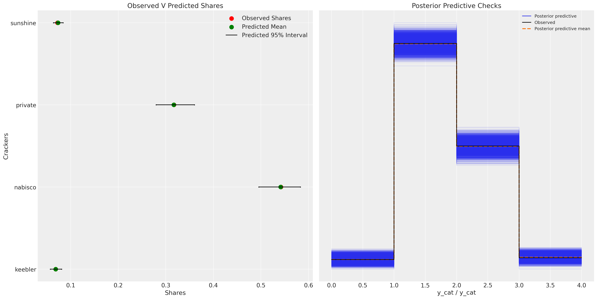Individual Heterogenous Utility
Individual Preference